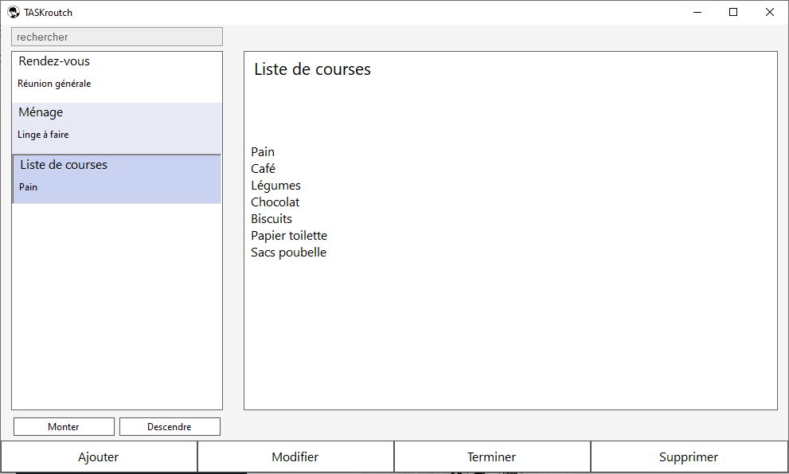

Mon Parcours
2019 : Informatique
Attiré par les ordinateurs depuis toujours, je décide enfin de me lancer dans ce domaine de manière sérieuse. J'ai alors intégré un BTS Systèmes Numériques : Informatique et Réseaux. Le fait de répondre à un besoin et de créer un outil est ce qui me plait dans le développement d'application, c’est pourquoi j'en ai fait mon métier.
2018 : Audiovisuel
J'ai toujours été intrigué par les caméras, les techniques de l'audiovisuel comme la télé ou le cinéma. Ainsi afin de préparé un BTS dans ce domaine j'ai effectué une Mise à Niveau Cinéma AudioVisuel. La formation m'a plu, toutefois faute d'avoir trouvé une alternance pour le BTS j'ai dû me réorienter.
2015 : Restauration
Curieux du domaine de la restauration, j'ai décidé après le collège de faire un Bac Professionnel Commercialisation et Service en Restauration. Cependant le métier de serveur ne me correspondait pas mais je n'oublie pas l'expérience acquise à travers la formation et les stages.
Mes Compétences
Front-End
HTML - CSS - JS
Framework JS
Angular - AngularJS
Framework CSS
Bootstrap - Semantic UI
Back-End
PHP
Java - J2EE
Base de données SQL
MySQL - SQLite
NoSQL débutant
Elastic Search - Neo4j - KvLite
Autres Technologies
C/C++
C# - .Net
Python
Réalisations
Applications
Sections
Un réseau social qui permet aux utilisateurs de créer des rubriques personnalisées sur leur profil pour publier par thème. Réalisé en PHP avec une base de données MySQL.
TASKetch
Un logiciel codé en C# permettant de créer des ToDo Listes.
